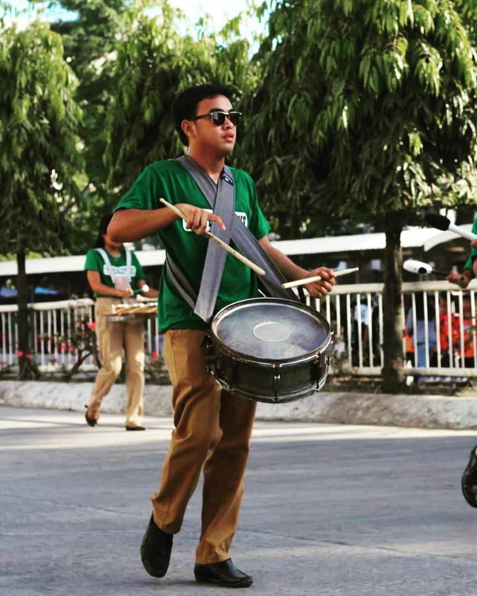

Playing different instruments such as drums and guitar are my hobbies. I joined Drum & Bugle Corps. since i was in elementary up until now, and i also learned to play guitar since i was in grade 8. These are the things that i do especially when i have no household chores or school works to do, playing these instruments heals my body and soul and it is important for my health, physically and mentaly. My life would be dull if there is no music in it.